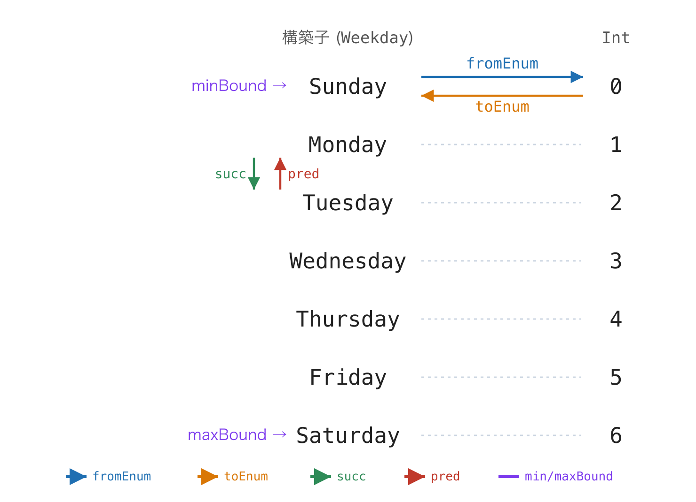

関数型プログラミング Ch8 型クラスと代数構造
資料
前章 (第7章)では, 型を 集合 とみなす見方を作り, その仕上げとして集合の上の 関係, とくに 同値関係 (反射・対称・推移) と 順序関係 (半順序・全順序) を定義しました. また, 章の締めくくりで「集合 (台) の上に演算を載せ, \forall で書ける法則を課したものが 構造 であり, Haskell では 型クラス がその受け皿になる」と予告しました.
本章はその予告の回収です. 一方で第7章では, データ型を定義するたびに書いてきた deriving Show について「詳細に関しては後ほど扱います」と先送りしていました. この deriving の正体も 型クラス (type class) です.
本章の流れは次のとおりです.
- まず型クラスという 言語の機構 を学び,
deriving Showを自分の手で書いてその中身を明らかにします (Showは法則を持たない「機能」の例です). - 次に 構造 = 組 + 法則 という一般形を整理し, その最初の実例として
EqとOrdを見ます. これらは前章の 同値関係 と 全順序 がそのまま型クラスになったものです. 同値関係からは 商集合, 全順序からは 束 という数学の風景も見えてきます. - 後半では演算を強くしながら 代数の階層 (マグマ → 半群 → モノイド → 群) を登り, 2 つのモノイドが協調する ブール代数 に合流します.
- 最後に 準同型 (構造を保つ写像) を一級の概念として取り出し, 代数構造のインスタンスにすることの実用上の利点 (畳み込み・並列・差分・融合) を見ます.
第7章では型を 集合 とみなしました. この章で扱う型クラスは, いわば 「ある演算や性質を備えた型たちの集まり」, つまり「型の集合」に近いものです. 集合 (型) の上に演算を入れたものが代数構造であり, Haskell ではその演算を型クラスのメソッドとして, 演算が満たすべき法則を (コンパイラは強制しませんが) 規約 として表現します.
講義で辿る道筋
今日の到達点: 型クラスを「操作だけ」の機能と「操作 + 法則」を持つ構造に分けて読み, モノイドと準同型が集計を可能にする理由を説明できる.
板書と本文では, 次の順に進みます.
- 型クラスとはとShow:
class,instance,deriving, クラス制約. - 構造の一般形, Eq, Ord: 操作・関係・法則を備える型.
- 半群とモノイド: 結合律と単位元が, 分割して集計できることを保証する. Exercise CH8-4
- 準同型とfoldMap: 構造を保った集計・変換. Exercise CH8-6
必要になったときに本文へ戻る節: 商集合・束, 群, ブール代数, Enum / Bounded / Num, stimes, 半環, QuickCheck の詳細.
型クラスという機構
型クラスとは
第7章までに, いくつかの異なる型に対して「同じ名前の操作」を使ってきました. たとえば show は Int でも MyDogs でも Bool でも使えますし, == は数でも文字列でも使えます. これらは「型ごとに別々に定義されているが, 同じ名前で呼べる」操作です.
このように 複数の型に共通する操作の集まりに名前を付け, その操作を持つ型を統一的に扱う仕組み が 型クラス (type class) です. 「型のクラス (種類分け)」であって, オブジェクト指向の「クラス (オブジェクトの設計図)」とは別物である点に注意してください.
型クラスは class で 宣言 し, 個々の型をそのクラスに 所属させる には instance を使います. まず最小の例で構文を見ます. 「挨拶できる」という性質を表す型クラス Greet を定義してみましょう.
-- 型クラスの宣言: 「greet という操作を持つ型 a の集まり」
class Greet a where
greet :: a -> Stringclass Greet a where の a は 型変数 で,「これからこのクラスに所属する任意の型」を表します. greet :: a -> String はこのクラスに属する型が必ず備えるべき操作 (メソッド) のシグネチャです.
次に, 第7章で定義したような列挙型をこのクラスに所属させます.
data Animal = Cat | Dog
-- Animal を Greet クラスのインスタンスにする
instance Greet Animal where
greet Cat = "にゃー"
greet Dog = "わん"instance Greet Animal where は「Animal 型は Greet クラスに所属し, その greet はこう定義する」という宣言です. これで greet Cat が "にゃー" を返すようになります.
型クラスの効果は, クラス制約 (class constraint) を使った多相関数で発揮されます. 第5章・第6章・第7章で print :: Show a => a -> IO () のように => の付いた型を見てきましたが, この Show a => こそがクラス制約です.
-- 「Greet のインスタンスである任意の型 a」を受け取れる関数
hello :: Greet a => a -> String
hello x = "こんにちは, " ++ greet xGreet a => a -> String は「a が Greet のインスタンスでありさえすれば, どの型でも受け取れる」という意味です. => の左がクラス制約, 右が本来の型です. これにより, 型ごとに helloAnimal, helloDog …と別名で関数を書く必要がなくなります.
実際に動かして確かめてみましょう. ここまでの定義をまとめ, main で greet の結果を画面に出力します.
class Greet a where
greet :: a -> String
data Animal = Cat | Dog
instance Greet Animal where
greet Cat = "にゃー"
greet Dog = "わん"
hello :: Greet a => a -> String
hello x = "こんにちは, " ++ greet x
main :: IO ()
main = do
putStrLn (greet Cat) -- にゃー
putStrLn (greet Dog) -- わん
putStrLn (hello Cat) -- こんにちは, にゃーgreet の戻り値は String なので, 画面に出すときは putStrLn を使います. ここで putStrLn の代わりに print を使うと, 日本語が次のように 数値へエスケープ されてしまい, 期待通りに表示されません.
main = print (greet Cat) -- "\12395\12419\12540" ← "にゃー" にならないprint x は 第7章で見たとおり putStrLn (show x) と定義されています. show は値を Haskell のソースコードに書ける文字列リテラル へ変換するメソッドで, String に対しては全体を " で囲んだうえ, ASCII の範囲外にある文字を \12395 のような十進エスケープに置き換えます (こうすれば show の結果をそのまま Haskell コードに貼り戻せます). そのため print (greet Cat) は にゃー ではなく "\12395\12419\12540" を出力します. 一方 putStrLn は show を介さず文字列をそのまま書き出すため, 日本語がそのまま表示されます. 戻り値が String の関数の結果を表示するときは putStrLn / putStr を使い, print は数値や自作データ型など「Show 表現そのもの」を見たいときに使う, と整理しておくとよいでしょう. なお, Left "エラー…" のように Show 表現の内側に日本語 String が入れ子 になっている場合は, 値全体が String ではないため putStrLn に替えるだけでは直せません. この一段深いケースと対処 (専用エラー型を使う / unicode-show の uprint を使う) は 第9章 の Either の節で扱います.
集合論的に言えば, 型クラス C は「メソッドを備えた型たちの集まり」であり, クラス制約 C a => は「型 a がその集まりに属する (a \in C とみなせる) ことを要求する」記法だと考えられます. ただし厳密には型クラスは型の集合そのものではなく, GHC が解決する 制約 です.
Haskell の標準ライブラリには, 最初から多くの型クラスが用意されています. 本章ではまず Show を自分の手で書いて deriving の中身を理解し, そのあと Eq / Ord / Enum / Bounded / Num を順に見ていきます.
Show
第7章で何度も書いてきた deriving Show は, Show という型クラスのインスタンスを GHC に自動生成させる 記法でした. Show クラスの中心となるメソッドは show です.
-- 標準ライブラリの Show (簡略版)
class Show a where
show :: a -> Stringshow :: a -> String は「値を文字列に変換する」操作です. 第7章で見た print x = putStrLn (show x) の show がこれです. deriving Show を書く代わりに, この show を 自分で実装 すれば, それが手書きの Show インスタンスになります.
data Color = Red | Green | Blue
instance Show Color where
show Red = "Red"
show Green = "Green"
show Blue = "Blue"
main :: IO ()
main = do
print Red -- Red
print Green -- Green
print Blue -- Blueこの手書きの show は, 各コンストラクタを その名前と同じ文字列 に変換しています. これはまさに deriving Show が自動生成する内容と一致します. つまり, 列挙型に対する deriving Show は,
instance Show Color where
show Red = "Red"
show Green = "Green"
show Blue = "Blue"を機械的に書いたものだと考えてよいのです. 第7章で「deriving Show はコンストラクタを文字列に変換する show を自動で導入するための記法」と説明したのは, このことを指していました.
もちろん, show を自分で書けば, コンストラクタ名とは違う表示にすることもできます.
data Color = Red | Green | Blue
instance Show Color where
show Red = "あか"
show Green = "みどり"
show Blue = "あお"コンストラクタが 引数を持つ 場合 (直積型・直和型), deriving Show は値を MkDogAge GoldenRetriever 3 のように表示し, 必要に応じて括弧を付けます. この「必要に応じた括弧付け」は show ではなく showsPrec という, 表示の優先順位を考慮するメソッドによって行われます. 手書きで完全に deriving と一致させるには showsPrec を実装する必要がありますが, 本講義では立ち入りません. 多くの場合 deriving Show をそのまま使えば十分です.
Show の対になるクラスとして, 文字列から値へ変換する Read クラス (read :: Read a => String -> a) もあります. read "Red" :: Color のように使いますが, 失敗時に実行時エラーになるため, 実用では後の章で扱う Maybe を返す readMaybe がよく使われます.
ここで 1 つ, 本章の主題につながる観察をしておきます. Show がインスタンスに要求するのは show :: a -> String という シグネチャだけ で, show が 満たすべき数学的な法則はありません. 上で見たとおり "Red" と表示しても "あか" と表示しても, どちらも正しい Show インスタンスです. つまり Show は型に 機能 を与えるだけの型クラスです. 次節から見る Eq と Ord は違います. シグネチャに加えて 法則 が課され, その法則こそ前章で定義した 同値関係 と 全順序 です. この「シグネチャ + 法則」という組み立てを, 先に一般形として整理しましょう.
Exercise CH8-1
方位型 Direction に Show を手書きする
東西南北を表す列挙型
DirectionをNorth,East,South,Westの 4 つのコンストラクタで定義してください. ただしderiving Showは付けず,Showインスタンスを手書きしてください.手書きの
showは, 各方位を日本語 1 文字 ("北","東","南","西") に変換するようにしてください.
-- 実行例
main :: IO ()
main = do
print North -- 北
print East -- 東
print South -- 南
print West -- 西回答例
data Direction = North | East | South | West
instance Show Direction where
show North = "北"
show East = "東"
show South = "南"
show West = "西"
main :: IO ()
main = do
print North -- 北
print East -- 東
print South -- 南
print West -- 西deriving Show ならコンストラクタ名そのもの (North 等) が表示されますが, show を手書きすればこのように好きな文字列へ変換できます. Show の最小完全定義は show (または showsPrec) です.
構造
構造の一般形
第7章の再帰的データ型の節で, ペアノの自然数を「台となる集合と演算の 組 (\mathbb{N}, 0, S)」として見ました. また章の後半では, 関係 (同値関係・順序関係) を「関係という対象に, \forall で書かれた法則を課したもの」として定義しました. この 2 つを合わせると, 数学的構造の一般形が見えてきます.
構造 = 組 (台, 演算たち, 関係たち) + 法則
成分を確認します.
- 台 (carrier): 演算や関係が働く土台の集合. Haskell では 型 が対応します.
- 演算 (operation): 第7章の演算の節で定義したとおり, 台の中で閉じた関数 f : A^n \to A です. アリティ (引数の個数) で分類され, 単位元のような特別な定数は 0 項演算, 逆元を返す操作は 1 項演算, 2 つの要素を結合する演算は 2 項演算 です. 行き先が台の外へ出る関数 (
length :: [a] -> Intなど) は演算ではありません. そうした「構造から構造へ渡る関数」は, 本章後半の 準同型 で主役になります. Haskell では型クラスの メソッド が対応します. - 関係 (relation): 第7章では関係 R \subseteq A \times A を判定関数
a -> a -> Boolで表しました. 判定関数は, 見方を変えれば「Boolへの 2 項演算」です. つまり関係も, 値を返す先がBoolであるだけで, 演算と同じ資格で組に載せられます.(==)や(<=)がまさにこれです. - 法則 (law): 演算・関係が満たすべき性質. \forall / \exists で書ける命題です. Haskell では 規約 であり, コンパイラは検査しません.
対応の辞書としてまとめます.
| 数学 (組の材料) | Haskell |
|---|---|
| 台集合 S | 型 a |
| 2 項演算 (\bullet など) | メソッド ((<>) など) |
| 0 項演算 = 特別な定数 (e など) | メソッド (mempty など) |
| 関係 (=, \leq など) | Bool を返すメソッド ((==), (<=)) |
| 法則 (結合律・反射律など) | 規約 (コンパイラは強制しない) |
発展: 関係を組に含めるかは流儀が分かれる
数学には, 構造の定式化に 2 つの流儀があります. 普遍代数 (universal algebra) は演算だけを組に載せ (演算の行き先は台自身: f : A^n \to A), 法則も等式に限ります. 群・環などの「代数」の一般論はこの世界で展開されます. 一方 モデル理論 (model theory) の「構造」は, 本文のように 演算と関係の両方 をシグネチャに含めます. 順序 (\leq) を備えた構造や, グラフ (辺の関係だけを持つ構造) を扱うにはこちらが必要で, 本章の Eq / Ord を構造として扱う立場もこの流儀です.
「関係 = Bool への 2 項演算」という読み替えが文字通り成立するのは, Haskell には Bool という もう 1 つの台 が実在するからです (台を 1 つしか持たない古典的普遍代数では演算の行き先は台自身に限られるため, この読み替えはできません).
それでも関係と演算を区別することには, 見た目以上の実質が 1 つあります. 構造を保つ写像 (準同型) の条件が違う のです. 演算は等式 f(x \bullet y) = f(x) \bullet f(y) で保存しますが, 関係は片方向 x \le y \implies f(x) \le f(y) で保存します (逆向きまで要求すると「埋め込み」という別の, より強い概念になります). この違いは本章後半の準同型の表にそのまま現れます.
さらに, 組の成分は 役割 で 3 つに分かれます. この三分は本章を通して繰り返し使います.
- データ: 定義の入力として 選ぶ もの (台と演算). 同じ台に別の演算を選べば別の構造になります (後で整数の上に加法と乗法の 2 つのモノイドを載せる例を見ます).
- 性質: 選んだデータについて成り立つか否かが 検査される もの (法則). 選ぶ余地はありません.
- property-like (あれば一意): 単位元のように, 存在すれば他の材料から 一意に決まる もの. データとして独立に選ぶのではなく, 「存在する」という性質に置き換えられる, 演算の付属品です (一意性の証明はモノイドの節で).
この一般形を頭に置くと, 型クラスの見え方が変わります. 型クラスの宣言 (class) はシグネチャ (どんな演算・関係を備えるか) の宣言 であり, 法則つきの型クラスは「構造」の宣言 です. Show には法則が無いのでただの機能でしたが, ここからは法則つきのクラスに入ります. 最初の実例は, 前章の関係がそのまま型クラスになった Eq と Ord です.
Eq
Eq は「2 つの値が 等しいか を判定できる」型クラスです. 比較演算子 == と /= (等しくない) を提供します.
class Eq a where
(==) :: a -> a -> Bool
(/=) :: a -> a -> Bool(==) :: a -> a -> Bool は, 前節の言葉で言えば「Bool への 2 項演算」= 関係 です. Eq を手書きしてみます.
data Color = Red | Green | Blue
instance Eq Color where
Red == Red = True
Green == Green = True
Blue == Blue = True
_ == _ = False
main :: IO ()
main = do
print (Red == Red) -- True
print (Red == Blue) -- False
print (Red /= Blue) -- Trueここで /= を定義していないのに Red /= Blue が動くことに注目してください. Eq クラスには デフォルト実装 があり, x /= y = not (x == y) と定義されています. そのため == だけ書けば /= は自動的に使えます. このように「これだけ定義すれば残りはデフォルトで埋まる」最小限のメソッドの組を 最小完全定義 (minimal complete definition) といいます. Eq の最小完全定義は「== または /= のどちらか一方」です.
deriving Eq は, この「同じコンストラクタどうしなら等しく, 引数があればその引数も再帰的に == で比較する」という定義を自動生成します.
では, Eq が課す 法則 は何でしょうか. == は「等しい」を意味すべき関係ですから, 満たすべき法則は 第7章の同値関係の節で定義した, あの 3 法則です.
- 反射律: \forall x.\ x = x
- 対称律: \forall x, y.\ \ x = y \implies y = x
- 推移律: \forall x, y, z.\ \ (x = y \land y = z) \implies x = z
つまり Eq とは「台の上に同値関係を 1 つ載せた構造 (A, ==)」の宣言 です. deriving Eq が生成する定義はこれらを満たしますが, 手書きするときは自分で保証する必要があります. 前章で見たとおり, 「積が偶数」のような一見それらしい関係は同値関係になり損ねるのでした. 有限の型なら, 前章の and + リスト内包表記による全数検査がそのまま使えます.
同値類と商集合
同値関係には, 定義しただけでは見えない大切な効用があります. 「同じとみなされるもの」を 1 つの塊にまとめられる ことです.
集合 A 上の同値関係 \sim が与えられたとき, 要素 x と同値なものを全部集めた部分集合
[x] \;=\; \{\, y \in A \mid y \sim x \,\}
を x の 同値類 (equivalence class) といいます (右辺は第7章の内包表記です). そして同値類をすべて集めた集合
A/\!\sim \;=\; \{\, [x] \mid x \in A \,\}
を A の \sim による 商集合 (quotient set) といいます. 同値関係の 3 法則は, ちょうど「同値類たちが互いに重ならず, A 全体を過不足なく分割する」ことを保証する条件になっています.
抽象的に聞こえますが, 実はよく知っているものがこの形をしています. 有理数 です. \frac{1}{2} と \frac{2}{4} は, データ (分子と分母のペア) としては違いますが, 数としては同じです. つまり有理数とは, 整数のペア (a, b) (b > 0) の集合を
(a, b) \sim (c, d) \quad\Longleftrightarrow\quad a \cdot d = c \cdot b
という同値関係で割った 商集合 \mathbb{Q} = (\mathbb{Z} \times \mathbb{Z}^{+})/\!\sim です. \frac{1}{2} という「数」の正体は, 同値類 [(1,2)] = \{(1,2), (2,4), (3,6), \dots\} という塊なのです.
これを Haskell に写してみます. データとしては分子・分母のペア, 等しさは上の関係を Eq インスタンスとして手書き します.
-- 分数: Frac 分子 分母 (分母は正の整数とする)
data Frac = Frac Int Int deriving Show
instance Eq Frac where
Frac a b == Frac c d = a * d == c * b
main :: IO ()
main = do
print (Frac 1 2 == Frac 2 4) -- True (1/2 = 2/4)
print (Frac 1 2 == Frac 2 3) -- False
print (Frac 3 6 == Frac 1 2) -- Truederiving Eq にしていたら Frac 1 2 == Frac 2 4 は False です (データ表現としては別物だから). 手書きの == はそれを True に変えました. つまり:
Eqインスタンスを自分で書くことは, 「この型をどの同値関係で割った商集合として使うか」を選ぶことです.deriving Eq= 「表現がそのまま等しさ」という選択, 手書き = 「表現の違いを同一視する」という選択.
なお, 分母が正であることは Frac の定義だけでは守られません (Frac 1 0 も書けてしまいます). こういう不変条件を型で守りたければ, 第7章のスマートコンストラクタの出番です.
商集合の考え方は, この後の 群 の節で「7 で割った余りの世界 \mathbb{Z}/7\mathbb{Z}」としてもう一度登場し, さらに 第12章の総合演習では「並び順を無視した多重集合 (Bag)」(リストの商) として実用されます.
Exercise CH8-2
分数型 Frac: 商集合としての有理数
本文の
Frac(分子・分母のペア, 分母は正とする) と, その手書きEqインスタンス (Frac a b == Frac c d\iff ad = cb) を定義してください.この
==が 同値関係 であること (反射律・対称律・推移律) を, 有限の集合fracs = [ Frac a b | a <- [-2..2], b <- [1..3] ]の上で全数検査してください (第7章のand+ リスト内包表記 + ガードの形).分数を 既約分数 (それ以上約分できない形) に直す関数
normalize :: Frac -> Fracを実装してください (gcdとabsが使えます. 分母は正のままとします). そしてnormalize (Frac 2 4) == Frac 1 2が成り立つこと, さらに任意のx <- fracsでnormalize x == x(正規化しても同じ同値類に留まる) ことを全数検査してください.
-- 実行例
main :: IO ()
main = do
print (Frac 1 2 == Frac 2 4) -- True
-- 2. の検査 3 つがすべて True
print (normalize (Frac 2 4)) -- Frac 1 2
print (normalize (Frac (-2) 4)) -- Frac (-1) 2
-- 3. の検査が True回答例
data Frac = Frac Int Int deriving Show
instance Eq Frac where
Frac a b == Frac c d = a * d == c * b
fracs :: [Frac]
fracs = [ Frac a b | a <- [-2..2], b <- [1..3] ]
normalize :: Frac -> Frac
normalize (Frac a b) = Frac (a `div` g) (b `div` g)
where g = gcd (abs a) b -- b > 0 なので gcd は正, 符号は分子に残る
main :: IO ()
main = do
print (Frac 1 2 == Frac 2 4) -- True
-- 同値関係の全数検査
print (and [ x == x | x <- fracs ]) -- True (反射律)
print (and [ y == x | x <- fracs, y <- fracs, x == y ]) -- True (対称律)
print (and [ x == z | x <- fracs, y <- fracs, z <- fracs
, x == y, y == z ]) -- True (推移律)
print (normalize (Frac 2 4)) -- Frac 1 2
print (normalize (Frac (-2) 4)) -- Frac (-1) 2
print (and [ normalize x == x | x <- fracs ]) -- True推移律が成り立つ理由を式で確かめておきます: ad = cb かつ cf = ed のとき, 両辺に掛け合わせて adf = cbf = edb, 分母 d > 0 で割れば af = eb. 分母を正に限った ことが推移律の証明で効いている点に注意してください (0 を許すと壊れます). normalize は各同値類の中から 代表元 (既約分数) を 1 つ選ぶ関数で, normalize x == x は「代表元は元と同じ塊に属する」ことの確認です.
提出ファイル名: ch8-2.hs
Ord
Ord は「2 つの値の 大小 を比較できる」型クラスです. ここで重要なのは, Ord が Eq を 前提とする 点です. 大小を比べるには「等しい」という概念が必要だからです. これを スーパークラス (superclass) といい, 次のように宣言されています.
class Eq a => Ord a where
compare :: a -> a -> Ordering
(<) :: a -> a -> Bool
(<=) :: a -> a -> Bool
(>) :: a -> a -> Bool
(>=) :: a -> a -> Bool
max :: a -> a -> a
min :: a -> a -> aclass Eq a => Ord a where の Eq a => が「Ord のインスタンスになるには, まず Eq のインスタンスでなければならない」という制約です. これが, 本章で Eq を Ord より先に説明する理由です.
中心となるメソッドは compare で, 2 つの値を比べて Ordering 型の値を返します. Ordering は
data Ordering = LT | EQ | GTという, 第7章で学んだ 列挙型 そのものです (LT = less than, EQ = equal, GT = greater than). Ord の最小完全定義は「compare または <= のどちらか一方」で, それさえ書けば <, >, max, min などはデフォルト実装から導かれます.
data Size = Small | Medium | Large deriving (Eq, Show)
instance Ord Size where
compare a b = compare (rank a) (rank b)
where
rank :: Size -> Int
rank Small = 0
rank Medium = 1
rank Large = 2
main :: IO ()
main = do
print (compare Small Large) -- LT
print (Medium < Large) -- True
print (maximum [Small, Large, Medium]) -- Largeここでは各コンストラクタに Int の 順位 を割り当て, その Int どうしの compare に処理を委ねています (Int はすでに Ord のインスタンスなので compare が使えます). < や maximum を一切定義していないのに使えるのは, これらが compare を用いたデフォルト実装を持つためです.
deriving Ord を使うと, コンストラクタを宣言した順序 がそのまま大小になります. 上の Size なら Small < Medium < Large です. 手書きの rank を使った定義は, この自動導出と同じ結果を与えます.
deriving (Eq, Ord) のように複数のクラスをまとめて導出できますが, Ord を導出するなら Eq も導出する (またはインスタンスにする) 必要があります. スーパークラスの関係上, Eq 抜きで Ord だけを導出することはできません.
Ord が課す 法則 は, 第7章の順序関係の節で定義した 全順序 の公理です.
- 反対称律: \forall x, y.\ \ (x \le y \land y \le x) \implies x = y
- 推移律: \forall x, y, z.\ \ (x \le y \land y \le z) \implies x \le z
- 全域比較可能性: \forall x, y.\ \ (x \le y) \lor (y \le x)
つまり Ord とは「台の上に全順序を 1 つ載せた構造 (A, \le)」の宣言 です. 前章では「割り切る関係 \mid や部分集合 \subseteq は半順序だが全順序ではない (比較不能な対がある)」ことを見ました. Ord はそれより強く, どの 2 つの値も必ず比較できる ことを要求します. 第5章の挿入ソートのような並べ替えが常に意味を持つのは, この全域比較可能性のおかげでした.
全順序は束
Ord のメソッドには, 比較 (<= など) のほかに min / max がありました. これは単なる便利関数ではなく, 代数的な意味を持ちます.
全順序では, どの 2 元 a, b も比較できるので, 2 つのうち 小さい方 \min(a,b) と 大きい方 \max(a,b) が必ず定まります. 順序の言葉で言えば, \min(a,b) は「a と b の両方以下の元のうち最大のもの (下限, meet)」, \max(a,b) は「両方以上の元のうち最小のもの (上限, join)」です. 任意の 2 元が下限と上限を持つ半順序集合を 束 (lattice) といいます. したがって:
全順序集合は, \min を交わり (meet), \max を結び (join) とする束になります.
この \min / \max は結合的な 2 項演算なので, 代数の階層 (次の部) では半群・モノイドの例としても再登場します. さらにブール代数の節では, この「順序から生まれる 2 演算」がもう 1 つの道と合流するのを見ます.
発展: 束 (lattice)
束は, 一般には 半順序 (第7章, 全順序とは限らない) の上で定義されます. 半順序集合 (L, \le) で任意の 2 元 a, b が下限 a \wedge b (meet) と上限 a \vee b (join) を持つものが束です. 演算側から等価に定義することもでき, 2 つの二項演算 \wedge, \vee が次を満たすもの, と言っても同じです.
- 結合律: (a \wedge b) \wedge c = a \wedge (b \wedge c) および (a \vee b) \vee c = a \vee (b \vee c)
- 交換律: a \wedge b = b \wedge a および a \vee b = b \vee a
- 吸収律: a \wedge (a \vee b) = a および a \vee (a \wedge b) = a
(吸収律から冪等律 a \wedge a = a, a \vee a = a も導けます.)
全順序でない束の例も, 実は前章にすでに登場しています.
- 割り切る関係 (\mathbb{Z}^{+}, \mid): 半順序で, meet = 最大公約数 \gcd, join = 最小公倍数 \mathrm{lcm} の束になります (2 と 3 は比較不能でも, \gcd(2,3)=1 と \mathrm{lcm}(2,3)=6 は存在します).
- 部分集合関係 (べき集合, \subseteq): 半順序で, meet = 積集合 \cap, join = 和集合 \cup の束になります.
「比較不能な対があっても, 交わりと結びは取れる」. これが束が全順序より広い所以です. 束のより進んだ理論は本講義の範囲を超えますが, ブール代数の節でこの語彙をもう一度使います.
Exercise CH8-3
メダル型 Medal に Eq と Ord を手書きする
メダルを表す列挙型
MedalをGold,Silver,Bronzeで定義し,deriving Showだけ付けてください.Eqインスタンスを手書きしてください (同じ種類なら等しい).Ordインスタンスを手書きしてください. ただし 金 > 銀 > 銅 の順序 (金が最も大きい) になるようにしてください.compareを実装します.
-- 実行例
main :: IO ()
main = do
print (Gold == Gold) -- True
print (Gold == Silver) -- False
print (compare Gold Bronze) -- GT
print (Silver < Gold) -- True
print (maximum [Bronze, Gold, Silver]) -- Gold回答例
data Medal = Gold | Silver | Bronze deriving Show
instance Eq Medal where
Gold == Gold = True
Silver == Silver = True
Bronze == Bronze = True
_ == _ = False
instance Ord Medal where
compare a b = compare (rank b) (rank a) -- 金を大きくするため逆順に
where
rank :: Medal -> Int
rank Gold = 0
rank Silver = 1
rank Bronze = 2
main :: IO ()
main = do
print (Gold == Gold) -- True
print (Gold == Silver) -- False
print (compare Gold Bronze) -- GT
print (Silver < Gold) -- True
print (maximum [Bronze, Gold, Silver]) -- GoldGold を順位 0 (最小の数) にしておき, compare (rank b) (rank a) と 左右を入れ替える ことで「数が小さい金ほど大きい」順序を作っています. Ord は Eq をスーパークラスに持つので, Eq インスタンスも必要です. < や maximum は compare のデフォルト実装から自動的に使えます.
代数の階層
第7章の演算の節では, 集合だけの世界 (図0) に演算を載せた世界 (図1), そして関数の世界 (図2) までの図の系列を描きました. ここからの舞台は, その 図1 の世界 です. 点はただ 1 つ (台 S), 射はすべて台自身へ戻る 演算 です. そして この図1 の世界に, \forall で書いた法則を課したものが代数 です. 課す法則を増やしながら, 構造を 1 段ずつ強くしていきます (図2, つまり射が型から型へ渡る世界そのものを台にする話は, 第9章の圏で扱います).
ここからは, 台の上に 2 項演算を 1 つ 載せた構造を, 課す法則の少ない順に積み上げていきます. 「構造の一般形」の節で見たとおり, 組の 材料が増える ((S,\bullet) \to (S,\bullet,e) \to (S,\bullet,e,{}^{-1})) のと 法則が増える のが同時に進みます. そして, 法則を 1 つ課すごとに, その型でできる集計 (能力) が 1 段ずつ広がります. 下の表の右端に, 各構造で新しく手に入る 能力 をまとめました. 「どの法則がどの能力を生むか」を先に掴んでおくと, このあとの各節が読みやすくなります.
| 構造 | 組 (材料) | 満たす法則 | 対応する型クラス | 生まれる能力 |
|---|---|---|---|---|
| マグマ | (S, \bullet) | 閉じている (だけ) | (標準には無い) | なし (演算が閉じるだけ) |
| 半群 | (S, \bullet) | 結合律 | Semigroup |
分割統治・並列 (順序は保つ) |
| モノイド | (S, \bullet, e) | 結合律 + 単位元律 | Monoid |
畳み込み (空の列も畳める) |
| 群 | (S, \bullet, e, {}^{-1}) | 結合律 + 単位元律 + 逆元律 | (標準には無い) | 取り消し・差分 (引き算) |
マグマと半群は組 (材料) が同じ (S, \bullet) で, 違いは 法則 (結合律) を課すかどうか だけです. モノイドで単位元 e, 群で逆元 {}^{-1} と, 下に行くほど組の材料が増え, その分 能力 も増えていきます.
この 4 段が基本の階層です. さらに 2 つの拡張があり, いずれも新しい能力を生みます. モノイドの演算が 可換 (a \bullet b = b \bullet a) だと 可換モノイド になり『順序不同で分散集計してよい』能力が, 加法・乗法にあたる 2 つの演算 を組にした 半環 (semiring) では『加重集計 (加重平均・線形結合)』の能力が加わります (可換モノイドは本節のモノイドで, 半環は後半「代数のインスタンスにする利点」で扱います). 各能力を実際に使う仕組み (foldMap や並列化など) は, 構造をひととおり定義したあとの後半章でまとめて見ます. まずは各節で, その構造が 何をできるようにするのか を一言ずつ確認していきます.
マグマ
最も法則の少ない代数構造が マグマ (magma) です. 台集合 S と二項演算 \bullet : S \times S \to S の組 (S, \bullet) で, 要求されるのは 演算が集合の中で閉じている (結果がまた S の要素になる) ことだけです. 結合律も単位元も要求しません.
Haskell の標準ライブラリにマグマのクラスはありませんが, この二項演算 \bullet に対応する演算子 (|*|) をメソッドに持つクラスを学習用に定義してみましょう. 組 (S, \bullet) の 台集合 S が型変数 a, 演算 \bullet がメソッド (|*|) に対応します.
class Magma a where
(|*|) :: a -> a -> a -- 数式の · に対応する閉じた二項演算 (法則は要求しない)身近なマグマの例が じゃんけん です. 台集合を S = \{\text{グー}, \text{チョキ}, \text{パー}\} とし, 「2 手を出して勝った方を返す」演算 a \bullet b を考えます (あいこなら左を返すことにします). たとえば \text{グー} \bullet \text{チョキ} = \text{グー} です. この組 (\{\text{グー}, \text{チョキ}, \text{パー}\}, \bullet) を Haskell に写すと, 台集合が型 RPS, 演算 \bullet が (|*|) になります.
data RPS = Rock | Paper | Scissors deriving (Show, Eq)
-- (|*|) が数式の · に対応する
instance Magma RPS where
Rock |*| Scissors = Rock -- グーはチョキに勝つ
Scissors |*| Rock = Rock
Paper |*| Rock = Paper -- パーはグーに勝つ
Rock |*| Paper = Paper
Scissors |*| Paper = Scissors -- チョキはパーに勝つ
Paper |*| Scissors = Scissors
a |*| _ = a -- あいこは左を返す(|*|) は 2 つの RPS から RPS を返すので, 確かに RPS の中で閉じています. これでマグマの条件は満たします. しかしこの演算は 結合律を満たしません. すなわち, ある a, b, c で (a \bullet b) \bullet c \neq a \bullet (b \bullet c) となります.
-- (Rock |*| Paper) |*| Scissors
-- = Paper |*| Scissors = Scissors
-- Rock |*| (Paper |*| Scissors)
-- = Rock |*| Scissors = Rock
-- Scissors /= Rock なので結合律は成り立たない「グーにパーで勝ち, それにチョキで勝つ」と「パーにチョキで勝ち, それにグーが向かう」とで結果が変わってしまうわけです. このように, 閉じてはいるが結合律を満たさない のがマグマの典型例です.
半群 (Semigroup)
マグマに 結合律 (associativity) を加えたものが 半群 (semigroup) です. 組としてはマグマと同じ (S, \bullet) のまま (新しい材料は増えません) で, 変わるのは 課す法則 だけです. 結合律とは, 二項演算 \bullet が すべての x, y, z について
\forall x, y, z.\ \ (x \bullet y) \bullet z = x \bullet (y \bullet z)
を満たすことです. 先頭の \forall (= すべての) は 第7章 で導入した 全称命題 で, 「どの 3 要素をとっても成り立つ等式」を要求しています. 結合律が成り立つと「演算する順序 (どこから括弧でくくるか) を気にしなくてよい」ため, x \bullet y \bullet z と括弧なしで書けます.
半群が生む能力: 分割統治・並列. 括弧をどこで区切ってもよいということは, 長い列 x_1 \bullet x_2 \bullet \cdots \bullet x_n を 前半と後半に分けて別々に集計し, 最後に合流してよい ということです. だから大きなデータの集計を分割統治・並列で走らせられます (ただし要素の 順序は保つ 必要があり, 並べ替えてよいかは後述の可換律しだいです). 詳しい仕組みは後半「代数のインスタンスにする利点」で見ます.
Haskell では半群は Semigroup クラスで表され, 演算子は (<>) です.
class Semigroup a where
(<>) :: a -> a -> a -- 結合律を満たすことが規約例として, 整数の上の演算「2 つの整数の 大きい方 を返す」a \sqcup b = \max(a, b), すなわち組 (\mathbb{Z}, \sqcup) を考えます. この \max は, Ord の節で見た 全順序の束の結び (join) そのものです. max は結合律 (a \sqcup b) \sqcup c = a \sqcup (b \sqcup c) を満たす (どこから比べても最大は同じ) ので半群になります. まず数式の \sqcup に対応する 2 項演算子 (|+|) を定義し, それを使って Semigroup の (<>) を与えます (台集合 \mathbb{Z} は型 Max で表します).
newtype Max = Max Integer deriving (Show, Eq)
-- (|+|) が数式の ⊔ (= max) に対応する
(|+|) :: Max -> Max -> Max
Max a |+| Max b = Max (max a b)
-- <> は (|+|) そのものとして定義する
instance Semigroup Max where
(<>) = (|+|)
main :: IO ()
main = do
print (Max 3 |+| Max 7) -- Max 7
print (Max 3 <> Max 7) -- Max 7 (<> は |+| と同じ)
print (Max 3 <> Max 7 <> Max 5) -- Max 7(<>) = (|+|) と定義したので, <> と (|+|) はまったく同じ演算です. (Max 3 <> Max 7) <> Max 5 でも Max 3 <> (Max 7 <> Max 5) でも結果は Max 7 で一致します. これが結合律 (a \sqcup b) \sqcup c = a \sqcup (b \sqcup c) です.
Semigroup クラスはメソッドのシグネチャを定めるだけで, 結合律が成り立つかどうかをコンパイラは検査しません. 結合律を満たさない (<>) を書いてもコンパイルは通ってしまいます. 法則を守るのはプログラマの責任です (本章末のコラム「法則を Haskell でどう守るか」で QuickCheck による確認方法を扱います).
Max には「これと演算しても相手を変えない値」, すなわち 単位元 が ありません. 台集合 \mathbb{Z} には最小元がなく, どんな整数よりも小さい値が存在しないため, max に対する単位元を作れないのです. このように一般の半群には単位元があるとは限らず, 単位元の有無が次のモノイドとの違いになります.
モノイド (Monoid)
半群に 単位元 (identity element) を加えたものが モノイド (monoid) です. ここで初めて組に新しい材料が増え, (S, \bullet) から (S, \bullet, e) になります (e が単位元). 単位元とは, 「すべての x と演算しても相手を変えない要素 e が 存在する」という条件で, 第7章 の 存在命題 を使って
\exists e.\ \forall x.\ \ e \bullet x = x \bullet e = x
と書けます. ここで \exists e が \forall x の 外側 にある点が大切で, 「(全体で) たった 1 つの e が, すべての x に効く」ことを表します. 「何もしない」値, と考えるとよいでしょう (足し算の 0, 掛け算の 1 がこれにあたります).
Haskell では Monoid クラスで表され, 単位元を mempty という名前で与えます.
class Semigroup a => Monoid a where
mempty :: a -- 単位元class Semigroup a => Monoid a とあるように, Monoid は Semigroup を スーパークラス に持ちます. 「単位元付きの半群」がモノイドなので, まず半群 (<>) であることが前提になるわけです.
整数は, 同じ台集合の上に 2 つのモノイド構造 を持ちます. 足し算の組 (\mathbb{Z}, +, 0) と掛け算の組 (\mathbb{Z}, \times, 1) です. ここが組記法の効きどころで, 台集合 \mathbb{Z} だけでは構造は決まらず, どの演算 \bullet と単位元 e を選ぶかまで指定して初めて 1 つのモノイドになります. (\mathbb{Z}, +, 0) と (\mathbb{Z}, \times, 1) は数学的に 別の対象 です.
この 2 つの組がそれぞれ モノイドの条件 (結合律・単位元律) を満たすこと を確認しておきましょう.
加法の組 (\mathbb{Z}, +, 0) がモノイドであること.
- 結合律: \forall a, b, c \in \mathbb{Z}.\ (a + b) + c = a + (b + c). これは整数の加法がもともと満たす性質 (加法の結合法則) なので成り立ちます.
- 単位元律: e = 0 とおくと \forall a \in \mathbb{Z}.\ a + 0 = 0 + a = a. すなわち 0 はどの a に足しても a を変えないので, 単位元の条件 \exists e.\ \forall a.\ e + a = a + e = a を満たします.
両方を満たすので (\mathbb{Z}, +, 0) はモノイドです.
乗法の組 (\mathbb{Z}, \times, 1) がモノイドであること.
- 結合律: \forall a, b, c \in \mathbb{Z}.\ (a \times b) \times c = a \times (b \times c). これも整数の乗法の結合法則として成り立ちます.
- 単位元律: e = 1 とおくと \forall a \in \mathbb{Z}.\ a \times 1 = 1 \times a = a. すなわち 1 が単位元です.
両方を満たすので (\mathbb{Z}, \times, 1) もモノイドです.
整数の加法・乗法が結合的であること自体は, 整数がもともと備える基本性質 (環の公理) として認めます. ここで本質的なのは, 同じ台集合 \mathbb{Z} でも演算と単位元の組を取り替えると別のモノイドになること, そして単位元が 0 と 1 で異なることです (前者を整数環の 加法モノイド, 後者を 乗法モノイド と呼びます).
この「台集合は同じだが構造が違う」状況が, Haskell の newtype の動機そのものです. 1 つの型に Monoid インスタンスは 1 つしか付けられないので, 任意精度整数 Integer (有界な Int と違い, 数学の \mathbb{Z} をそのまま表せます) を 2 通りに包み分けて, 組ごとに別の型 (Add = (\mathbb{Z},+,0), Mul = (\mathbb{Z},\times,1)) を与えます.
-- 加法のモノイド: a ⊕ b = a + b, 単位元 e = 0
newtype Add = Add Integer deriving (Show, Eq)
(.+.) :: Add -> Add -> Add
Add a .+. Add b = Add (a + b)
instance Semigroup Add where (<>) = (.+.) -- <> = ⊕
instance Monoid Add where mempty = Add 0 -- e = 0
-- 乗法のモノイド: a ⊗ b = a × b, 単位元 e = 1
newtype Mul = Mul Integer deriving (Show, Eq)
(.*.) :: Mul -> Mul -> Mul
Mul a .*. Mul b = Mul (a * b)
instance Semigroup Mul where (<>) = (.*.) -- <> = ⊗
instance Monoid Mul where mempty = Mul 1 -- e = 1
main :: IO ()
main = do
print (Add 3 .+. Add 4) -- Add 7
print (Add 3 <> mempty) -- Add 3 (単位元と演算しても変わらない)
print (mconcat [Add 1, Add 2, Add 3]) -- Add 6
print (Mul 3 .*. Mul 4) -- Mul 12
print (mconcat [Mul 1, Mul 2, Mul 3]) -- Mul 6Add 3 <> mempty が Add 3 のまま変わらないのが単位元律です. また, モノイドには mconcat :: Monoid a => [a] -> a という「リストの要素を <> で畳み込む」関数が用意されています. mconcat [Add 1, Add 2, Add 3] は Add 1 <> Add 2 <> Add 3 <> mempty を計算して Add 6 を返します. 空リストに対しては mconcat [] = mempty となり, 単位元が「空の畳み込みの結果」として効いてきます.
モノイドが生む能力: 畳み込み. 単位元があるおかげで, mconcat のように 列全体を 1 つの値に畳み込め, しかも 空の列 も単位元が結果を引き受けます (単位元のない半群では「空の畳み込み」を定義できません). これが集計処理の土台で, 後半ではこの畳み込みを foldMap としてリスト以外の入れ物 (木や Maybe など) にも一般化します. さらにその演算が 可換 (a \bullet b = b \bullet a, 加算の Add はこれを満たすがリスト連結は満たさない) であれば 可換モノイド となり, 部分結果を 順不同で合流してよい ため分散集計に向きます (非可換なモノイドは順序を保つ必要があります).
ここで定義した Add / Mul に相当する型は, 標準ライブラリの Data.Monoid に Sum / Product として用意されています. 実務ではこれらを使えば十分ですが, 中身は上で書いたものと同じです.
「構造の一般形」の三分をモノイドで確かめる
- 台 S と演算 \bullet はデータ: 上で見たとおり, 同じ台 \mathbb{Z} に (+, 0) と (\times, 1) の 2 つの構造が載りました. 台を決めても演算は決まりません. どれを選んだかが対象そのものを決めます (これが
newtypeで包み分けた理由です). - 法則は性質: 結合律・単位元律は, 選んだデータについて成り立つかを検査する条件です.
- 単位元 e は property-like: あれば \bullet から 一意に決まります. e と e' がともに単位元なら e = e \bullet e' = e' となるからです (e \bullet e' を, e' が単位元とみて左から読めば e, e が単位元とみて右から読めば e').
アリティで見れば, \bullet は 2 項演算, 単位元は 0 項演算 (定数) です. つまり モノイド = (台, 2 項演算, 0 項演算) の組 + 法則 という揃った形です. この「組 + 法則」は 第9章の圏 (台が「値」から「関数」へ持ち上がります), さらに 第10章のモナドで, 同じ形のまま再演されます.
リスト
整数が Add / Mul と 包み分け を要したのは, 同じ台集合 \mathbb{Z} に加法・乗法という 2 つのモノイド構造 が載る特別な事情があったからでした. 多くの型は最初から 自然な構造をただ 1 つ 持ち, newtype なしでそのまま Monoid のインスタンスになっています. その最も身近な代表例が リスト [a] です.
リスト [a] は, 連結 (++) を演算, 空リスト [] を単位元とするモノイドです (a はどんな要素型でもかまいません).
- 演算
<>= (\!+\!+) :[1,2] <> [3,4]は[1,2,3,4] - 単位元
mempty= [] : 前後どちらに連結しても変わらない ([] ++ xs = xs,xs ++ [] = xs) - 結合律:
(xs ++ ys) ++ zs = xs ++ (ys ++ zs)(連結する順序を変えても結果は同じ)
main :: IO ()
main = do
print ([1,2,3] <> [4,5,6]) -- [1,2,3,4,5,6] (<> = ++)
print ([1,2,3] <> mempty) -- [1,2,3] (単位元 e = [])
print (mconcat [[1,2],[3],[4,5]]) -- [1,2,3,4,5] (mconcat = concat)
putStrLn ("Hello, " <> "world" <> "!") -- Hello, world! (String = [Char] も)
print ([1,2] <> [3] == [3] <> [1,2]) -- False (連結は非可換)Add / Mul のような包み分けが要らないのは, リストの連結には 演算の選びようが本質的に 1 つしかない からです. しかも 文字列 String は [Char], すなわち文字のリストなので, 文字列の連結 "Hello, " <> "world" もこのリストのモノイドそのものです.
ここで, これまでの Add / Mul との違いを 1 つ押さえておきます. 整数の加法・乗法は 可換 (a \bullet b = b \bullet a) でしたが, リストの連結は可換ではありません. [1,2] <> [3] は [1,2,3], [3] <> [1,2] は [3,1,2] と, 左右を入れ替えると結果が変わります. モノイドの条件は 結合律と単位元律だけ で, 可換律は要求されません. 「並べた順序を保ったままつなぐ」というリストの素直な性質が, そのままモノイドになっているわけです.
この「順序を保って単につなぐ」リストは, モノイドで集計するときの 雛形 でもあります. データ列を集計する典型は「各データを f で目的のモノイドへ持ち上げ (map f), それを mconcat でまとめる」形で, すぐ次の Exercise CH8-4 の mconcat . map singleton がまさにこれです. この形は後の「代数のインスタンスにする利点」章で foldMap として一般化され, そこではリスト自身が 自由モノイド (free monoid) と呼ばれる「集計の出発点」であることも扱います.
Exercise CH8-4
統計量を集計するモノイド Stats
データを 1 つずつ畳み込んで「個数」と「合計」を同時に集計する型 Stats を作り, モノイドにします.
Statsを, 個数statCount :: Intと合計statSum :: Intを持つレコード型として定義してください (deriving (Show, Eq)).Semigroupインスタンスを定義してください. 2 つのStatsを合成するときは, 個数どうし・合計どうしをそれぞれ足します.Monoidインスタンスを定義してください. 単位元は「個数 0, 合計 0」です.整数 1 つを
Stats1 件分 (件数 1・その値が合計) にする関数singleton :: Int -> Statsを定義し,mconcat (map singleton xs)でリストxsの件数と合計をまとめて求められることを確認してください.リスト全体を 1 つの
Statsにまとめる関数stats :: [Int] -> Statsをstats = mconcat . map singletonで定義してください. そのうえでstats (xs ++ ys) == stats xs <> stats ysが成り立つこと, すなわち リストを連結してから集計しても (合算 → 関数適用), 別々に集計してから合成しても (関数適用 → 合算), 結果が一致する ことを確認してください.
-- 実行例
main :: IO ()
main = do
print (singleton 10 <> singleton 20) -- Stats {statCount = 2, statSum = 30}
print (mconcat (map singleton [1,2,3,4])) -- Stats {statCount = 4, statSum = 10}
print (mconcat (map singleton []) ) -- Stats {statCount = 0, statSum = 0}
print (stats [1,2,3,4]) -- Stats {statCount = 4, statSum = 10}
-- 連結してから集計 == 別々に集計してから合成
print (stats ([1,2] ++ [3,4])) -- Stats {statCount = 4, statSum = 10}
print (stats [1,2] <> stats [3,4]) -- Stats {statCount = 4, statSum = 10}回答例
data Stats = Stats { statCount :: Int, statSum :: Int }
deriving (Show, Eq)
instance Semigroup Stats where
Stats c1 s1 <> Stats c2 s2 = Stats (c1 + c2) (s1 + s2)
instance Monoid Stats where
mempty = Stats 0 0
singleton :: Int -> Stats
singleton n = Stats 1 n
stats :: [Int] -> Stats
stats = mconcat . map singleton
main :: IO ()
main = do
print (singleton 10 <> singleton 20) -- Stats {statCount = 2, statSum = 30}
print (mconcat (map singleton [1,2,3,4])) -- Stats {statCount = 4, statSum = 10}
print (mconcat (map singleton [])) -- Stats {statCount = 0, statSum = 0}
print (stats [1,2,3,4]) -- Stats {statCount = 4, statSum = 10}
print (stats ([1,2] ++ [3,4])) -- Stats {statCount = 4, statSum = 10}
print (stats [1,2] <> stats [3,4]) -- Stats {statCount = 4, statSum = 10}各データを singleton n = Stats 1 n (件数 1・その値が合計) で「1 点分の要約」に持ち上げ, モノイドの畳み込み mconcat でまとめて集計しています. singleton という名前は, Data.Set.singleton や Data.Map.singleton と同じく「要素 1 つからその構造を作る」関数を表す慣用です. 空リストのときは mempty = Stats 0 0 が結果になり, 単位元が「集計の初期値」として効きます. このように, 集計処理をモノイドで表すと「1 件への持ち上げ (singleton)」と「畳み込み (mconcat)」に分離でき, 平均 (statSum / statCount) なども後から組み立てられます.
なお stats = mconcat . map singleton は 準同型 (stats (xs ++ ys) = stats xs <> stats ys かつ stats [] = mempty) を満たします. これは「関数適用と合算を入れ替えてよい」という性質で, 後の準同型の章で正面から扱います.
群 (Group)
モノイドに 逆元 (inverse element) を加えたものが 群 (group) です. 組はさらに伸びて (S, \bullet, e, {}^{-1}) になります ({}^{-1} が「各元にその逆元を返す」操作). 逆元とは, 「各要素 x に対して, 演算で打ち消して単位元に戻せる相手 y が 存在する」という条件で, 全称命題と存在命題を組み合わせて
\forall x.\ \exists y.\ \ x \bullet y = y \bullet x = e \quad (e \text{ は単位元})
と書けます (この y を x^{-1} と書きます). ここでは \exists y が \forall x の 内側 にあり, 「x ごとに 別の y を選んでよい」ことを表します.
モノイドの単位元 \exists e.\ \forall x と, 群の逆元 \forall x.\ \exists y では 量化子の順序が逆 です. この違いが, 「(全体で) 1 つの単位元」と「(元ごとに) それぞれの逆元」という差を生みます.
整数の加法 (\mathbb{Z}, +, 0) は群です. 各 n の逆元は -n で, n + (-n) = 0 となります. 一方, 整数の乗法 (\mathbb{Z}, \times, 1) はモノイドですが 群ではありません. たとえば 2 の逆元 \frac{1}{2} は整数ではないからです. また, 自然数の加法 (\mathbb{N}, +, 0) もモノイドですが, 負の数がないので群にはなりません.
群が生む能力: 取り消し・差分. 逆元があると, いったん演算した寄与を 後から打ち消せます. x \bullet y^{-1} が「y の分を引く」にあたります. 整数の合計 (\mathbb{Z} の加法) のように群になっていれば, 集計に足した項目を 減算で取り消したり, 2 つの状態の 差分 を取ったりできます. 単位元だけのモノイド (たとえば \mathbb{N} の加法) では足すことしかできず, 一度足したものは消せません. 「取り消せる」のは逆元をもつ群ならではの能力です.
Haskell の標準ライブラリに群のクラスはないので, モノイドを拡張する形で学習用に定義します. 組の 4 つ目の材料 {}^{-1} が, メソッド invert に対応します.
class Monoid a => Group a where
invert :: a -> a -- 逆元 (組の 4 つ目の材料) を返すℤ/7ℤ
有限の群の例として, 本章と前章の道具が一斉に合流する例を取り上げます. 「7 で割った余り」の世界 です.
第7章の同値関係の節で, 「7 で割った余りが等しい」(congruent7) が整数の上の 同値関係 であり, 「同じ曜日である」と読めることを確かめました. この同値関係で整数全体を割った 商集合 (本章「同値類と商集合」の節) が
\mathbb{Z}/7\mathbb{Z} \;=\; \{\, [0], [1], [2], [3], [4], [5], [6] \,\}
です. [n] は「7 で割って n 余る整数」の同値類です. [0] = \{\dots, -7, 0, 7, 14, \dots\} が日曜日の類, [1] が月曜日の類, … と, 7 つの同値類がちょうど 7 つの曜日 です.
この商集合の上には, 足し算が定まります.
[a] \oplus [b] = [a + b]
「a 日目の b 日後は a+b 日目」です. 曜日で言えば「月曜 [1] の 3 日後は木曜 [4]」です. そして組 (\mathbb{Z}/7\mathbb{Z},\ \oplus,\ [0],\ {}^{-1}) は 群 になります.
- 単位元 [0]: 0 日後はそのまま. [a] \oplus [0] = [a].
- 逆元 -[a] = [7 - a]: a 日進んだあと 7-a 日進めば, 合わせて 7 日 = ちょうど 1 週間で元の曜日に戻ります. 式では [a] \oplus [7-a] = [a + 7 - a] = [7] = [0].
7 で割った余りをとる (= 商を取る) ことで, ただのモノイドだった \mathbb{N} の足し算の世界に「1 週間で 1 周する」循環が生まれ, 逆元が存在できるようになった. 商集合が群をなす, という現象です (一般に, \mathbb{Z}/n\mathbb{Z} はどの n \geq 1 でも加法の群になります).
Haskell に写します. 同値類 [n] を 代表元 0 \dots 6 で表し, 「整数をその同値類の代表元へ送る」関数 mkZ7 (つまり 商への射影) を通してだけ値を作ることにします (第7章のスマートコンストラクタの発想です).
newtype Z7 = Z7 Int deriving (Show, Eq)
-- 商への射影: 整数をその同値類の代表元 (0..6) へ送る
mkZ7 :: Int -> Z7
mkZ7 n = Z7 (n `mod` 7)
-- 群の演算 ⊕: [a] ⊕ [b] = [a + b]
(.@.) :: Z7 -> Z7 -> Z7
Z7 a .@. Z7 b = mkZ7 (a + b)
instance Semigroup Z7 where (<>) = (.@.) -- <> = ⊕
instance Monoid Z7 where mempty = mkZ7 0 -- 単位元 [0]
instance Group Z7 where
invert (Z7 a) = mkZ7 (7 - a) -- 逆元 -[a] = [7 - a]
main :: IO ()
main = do
print (mkZ7 1 .@. mkZ7 3) -- Z7 4 (月曜の 3 日後は木曜)
print (mkZ7 5 .@. mkZ7 4) -- Z7 2 (5 + 4 = 9 ≡ 2)
print (invert (mkZ7 2)) -- Z7 5 ([2] の逆元は [5])
print (mkZ7 2 <> invert (mkZ7 2)) -- Z7 0 (元と逆元の演算は単位元)
print (mkZ7 9 == mkZ7 2) -- True (9 ≡ 2 (mod 7) — 同じ同値類)mkZ7 9 == mkZ7 2 が True になるのは, どちらも代表元 Z7 2 に 正規化 されてから比較されるためです. ここで商集合の実装法が 2 通り出そろったことに注目してください. Frac は等しさの側を緩めた (Eq を手書きして異なる表現を同一視した) のに対し, Z7 は表現の側を正規化した (mkZ7 で代表元に揃えたので deriving Eq のままでよい). どちらも「商集合を型で表す」ための実装イディオムです. ただし Z7 方式は「値は必ず mkZ7 を通して作る」という不変条件に依存します. Z7 9 を直接書くと壊れるので, 本格的に守るには前章のスマートコンストラクタ (モジュールでコンストラクタを隠す) を使います.
前章の演習 CH7-1 で書いた nextDay (翌日の曜日) は, この群の言葉では「[1] を足す」操作にほかなりません. 循環する境界処理 (Saturday の次は Sunday) が自然に見えるのは, 曜日が群 \mathbb{Z}/7\mathbb{Z} だからです.
ここまでの マグマ → 半群 → モノイド → 群 は, 組の 材料 と 法則 を 1 つずつ足して構造を強くしていく階層になっています. 組が伸びる ((S,\bullet) \to (S,\bullet,e) \to (S,\bullet,e,{}^{-1})) のと, 法則が積み上がるのが対応します.
- マグマ (S, \bullet): 閉じた演算だけ (じゃんけん)
- 半群 (S, \bullet): + 結合律 (
Max). 組は同じ, 法則だけ追加 - モノイド (S, \bullet, e): + 単位元 (
Add/Mul, リスト) - 群 (S, \bullet, e, {}^{-1}): + 逆元 (\mathbb{Z} の加法,
Z7)
Semigroup → Monoid のスーパークラス関係は, この「半群に単位元を足すとモノイド」という数学的な階層を, そのまま型クラスの継承関係として写したものです.
ブール代数
「1 つの台集合の上に 2 つのモノイド構造が載る」例は, 整数の (加法・乗法) だけではありません. 真偽値 の上にも, 論理積 \wedge と 論理和 \vee という 2 つのモノイドが載ります.
ここでは Haskell 組込の Bool を使わず, 第7章で学んだ 列挙型 として真偽値を自分で定義してみましょう. 真 T と偽 F の 2 値からなる型 Bool2 です.
data Bool2 = T | F deriving (Show, Eq)
-- 論理積 ∧ に対応する演算子 (.&.): a ∧ b
(.&.) :: Bool2 -> Bool2 -> Bool2
T .&. T = T
_ .&. _ = F
-- 論理和 ∨ に対応する演算子 (.|.): a ∨ b
(.|.) :: Bool2 -> Bool2 -> Bool2
F .|. F = F
_ .|. _ = T
-- 否定 ¬ は 1 項演算なので関数のまま: ¬a
not2 :: Bool2 -> Bool2
not2 T = F
not2 F = Tこの台集合 \{\text{T}, \text{F}\} の上にも, 整数のときと同じく 2 つのモノイドの組が載ります.
- 論理積の組 (\{\text{T}, \text{F}\}, \wedge, \text{T}): 演算 \wedge (
(.&.)), 単位元T(\text{T} \wedge x = x). - 論理和の組 (\{\text{T}, \text{F}\}, \vee, \text{F}): 演算 \vee (
(.|.)), 単位元F(\text{F} \vee x = x).
整数の (\mathbb{Z}, +, 0) / (\mathbb{Z}, \times, 1) とまったく同じ構図で, 台集合は共通でも組が違えば別のモノイドです. よって 1 つの型に Monoid は 1 つしか付けられない以上, newtype で 2 通りに包み分けます (組込の Bool に対する同じ構造が, Data.Monoid に All / Any として実在します).
-- 論理積のモノイド: 全部 T なら T (<> = ∧)
newtype All2 = All2 { getAll2 :: Bool2 } deriving (Show, Eq)
instance Semigroup All2 where All2 a <> All2 b = All2 (a .&. b)
instance Monoid All2 where mempty = All2 T
-- 論理和のモノイド: 1 つでも T なら T (<> = ∨)
newtype Any2 = Any2 { getAny2 :: Bool2 } deriving (Show, Eq)
instance Semigroup Any2 where Any2 a <> Any2 b = Any2 (a .|. b)
instance Monoid Any2 where mempty = Any2 F
main :: IO ()
main = do
print (T .&. F) -- F
print (T .|. F) -- T
print (not2 T) -- F
print (getAll2 (All2 T <> All2 F)) -- F
print (getAll2 (mconcat [All2 T, All2 T])) -- T
print (getAll2 (mempty :: All2)) -- T (∧ の単位元)
print (getAny2 (Any2 F <> Any2 T)) -- T
print (getAny2 (mempty :: Any2)) -- F (∨ の単位元)All2 を mconcat で畳み込めば「全要素が真か」, Any2 なら「1 つでも真か」を計算できます. これは 第7章の有限全数検査で使った and / or の 代数的な正体 でもあります. \forall の有限版は \wedge モノイドの畳み込み, \exists の有限版は \vee モノイドの畳み込みだったのです.
この (\wedge, \vee) の 2 つのモノイドは, 互いに無関係ではなく 分配律 や 吸収律, さらに各要素の 補元 (否定 \neg) で結びついています. このように, 2 つのモノイド演算 \wedge, \vee と補元 \neg, および両端 (最大元 T・最小元 F) を備え, 次の法則を満たす代数構造を ブール代数 (Boolean algebra) といいます.
- 両演算がモノイド (可換): \wedge は単位元
T, \vee は単位元F. - 分配律: x \wedge (y \vee z) = (x \wedge y) \vee (x \wedge z), および \vee と \wedge を入れ替えたもの.
- 補元律: x \wedge \neg x = \text{F}, x \vee \neg x = \text{T}.
ブール代数は, このように 2 つのモノイドが対になって協調する 代数構造の代表例です. 真偽値の論理だけでなく, 第7章で扱った 集合演算 (積集合 \cap が \wedge, 和集合 \cup が \vee, 補集合が \neg に対応) も同じ法則を満たすブール代数になっています.
演算の道と順序の道が出会う
ここで, 本章の 2 本の道がひとつに合流します.
- 演算の道 (この部): 真偽値の上に 2 つのモノイド (\wedge, \text{T}), (\vee, \text{F}) を載せました.
- 順序の道 (前の部):
Ordの節で「全順序集合は \min を交わり, \max を結びとする 束 になる」ことを見ました. 真偽値にも「偽 < 真」という全順序があります (Haskell のBoolもFalse < Trueです). ではその \min / \max は何でしょうか.
2 つの真偽値の \min (小さい方) は「両方が真のときだけ真」で, これは \wedge そのものです. \max (大きい方) は「どちらかが真なら真」= \vee です.
\min \;=\; \wedge, \qquad \max \;=\; \vee
組込の Bool で全数検査してみます (値が 2 つしかないので, これは検査というより 全数の証明 です).
main :: IO ()
main = do
print (min True False == (True && False)) -- True (min = ∧)
print (max True False == (True || False)) -- True (max = ∨)
print (and [ min x y == (x && y) && max x y == (x || y)
| x <- [False, True], y <- [False, True] ]) -- True (全 4 通りで一致)モノイドとして導入した \wedge / \vee (演算の道) と, 全順序の束から生まれる meet / join (順序の道) が, 同じ演算だった. ブール代数はこの 2 本の道の 二重の合流点 です. Ord の節の発展 note で見た「べき集合では \cap = meet, \cup = join」も同じ現象で, 前章の集合演算・関係と本章の代数が, ここで 1 枚の絵につながります.
発展: 束からブール代数へ
Ord の節の発展 note で定義した 束 に条件を足していくと, ブール代数にたどり着きます.
- 有界束: 最大元 \top と最小元 \bot をもつ束. これらは \wedge / \vee の 単位元 になり, (L, \wedge, \top) と (L, \vee, \bot) がそれぞれモノイドになります (本節の 2 つのモノイドはこれです).
- 分配束: 分配律 a \wedge (b \vee c) = (a \wedge b) \vee (a \wedge c) (および \wedge, \vee を入れ替えたもの) を満たす束.
- 可補束: 各元 a に 補元 \neg a (a \wedge \neg a = \bot かつ a \vee \neg a = \top) が存在する有界束.
そして, 有界・分配・可補をすべて満たす束がブール代数 です. Bool2 では \wedge / \vee / 最大元 \top = T / 最小元 \bot = F / 補元 = not2 がそれぞれ対応します. 束のより進んだ理論や応用は本講義の範囲を超えるため, ここでは「2 つのモノイドが順序を介して協調する構造」という理解で十分です.
列挙と数値のクラス
代数の階層からいったん降りて, 実用上よく使う型クラスを 2 つ押さえます. どちらも, いま手に入れた構造の目で見直すと新しい顔が見えます.
Enum と Bounded
第7章の演習 CH7-1 では, 曜日型 Weekday の「翌日」を返す nextDay を, 7 通りすべて手書きで場合分けしました. Enum と Bounded を使うと, これをずっと簡潔に書けます.
Enum は「値を 順番に数え上げられる」型クラスで, 前後の値を返す succ (successor, 次) / pred (predecessor, 前) や, 値と整数を相互変換する toEnum / fromEnum を提供します. [a..b] という範囲記法も Enum の上に成り立っています.
class Enum a where
succ :: a -> a
pred :: a -> a
toEnum :: Int -> a
fromEnum :: a -> Int
-- ほか, 範囲記法 [a..b] を支えるメソッドBounded は「最小値と最大値を持つ」型クラスで, minBound と maxBound を提供します.
class Bounded a where
minBound :: a
maxBound :: aこれら 4 つのメソッドと minBound / maxBound の関係を, 曜日型 Weekday を例に図示すると次のようになります. 各構築子が宣言順に整数 0, 1, 2, … へ対応し, fromEnum が構築子→整数, toEnum がその逆 (整数→構築子) で互いに逆向きの変換, succ / pred が隣の構築子への移動, minBound / maxBound が先頭・末尾の端点を表します.

この 2 つを deriving すると, 第7章の nextDay は次のように書き直せます.
data Weekday = Sunday | Monday | Tuesday | Wednesday | Thursday | Friday | Saturday
deriving (Show, Eq, Ord, Enum, Bounded)
-- 翌日: 土曜の次は日曜に戻るよう循環させる
nextDay :: Weekday -> Weekday
nextDay d
| d == maxBound = minBound
| otherwise = succ d
-- 全曜日のリスト
allDays :: [Weekday]
allDays = [minBound .. maxBound]
main :: IO ()
main = do
print (nextDay Friday) -- Saturday
print (nextDay Saturday) -- Sunday
print allDays -- [Sunday,Monday,Tuesday,Wednesday,Thursday,Friday,Saturday]succ d が「宣言順での次のコンストラクタ」を返し, d == maxBound (= Saturday) のときだけ minBound (= Sunday) に巻き戻すことで, 7 通りの場合分けを書かずに循環を表現できています. [minBound .. maxBound] は Enum の範囲記法と Bounded の端点を組み合わせて「全要素のリスト」を作るイディオムです.
この「循環する nextDay」は, 群 \mathbb{Z}/7\mathbb{Z} の言葉では「[1] を足す」操作でした. Enum の succ は端で止まる (循環しない) ため巻き戻しの場合分けが要ります. 曜日の本当の姿は直線 (Enum の整数対応) ではなく円環 (剰余の群) だ, というのが群の節の視点です.
succ maxBound や pred minBound は範囲外なので 実行時エラー になります. 上の nextDay で d == maxBound を先に確認しているのは, succ Saturday を呼ばないためです.
Exercise CH8-5
Enum / Bounded で方位を時計回りに回す
Exercise CH8-1 の Direction に deriving (Show, Eq, Enum, Bounded) を付け直し (Show は導出してよい), 時計回りに 90 度回した方位を返す関数 turnRight :: Direction -> Direction を実装してください. コンストラクタの順序は North | East | South | West (時計回り) とし, West の次は North に戻るよう 循環 させます. 手書きの 4 通り場合分けではなく, succ / minBound / maxBound を使ってください.
-- 実行例
main :: IO ()
main = do
print (turnRight North) -- East
print (turnRight East) -- South
print (turnRight West) -- North
print [minBound .. maxBound :: Direction] -- [North,East,South,West]回答例
data Direction = North | East | South | West
deriving (Show, Eq, Enum, Bounded)
turnRight :: Direction -> Direction
turnRight d
| d == maxBound = minBound
| otherwise = succ d
main :: IO ()
main = do
print (turnRight North) -- East
print (turnRight East) -- South
print (turnRight West) -- North
print [minBound .. maxBound :: Direction] -- [North,East,South,West]本文の nextDay と同じイディオムです. d == maxBound (= West) のときだけ minBound (= North) に巻き戻し, それ以外は succ で次のコンストラクタへ進めます. 循環の境界処理を Bounded の端点で書けるのがポイントです (方位も曜日と同じく, 本当の姿は \mathbb{Z}/4\mathbb{Z} の円環です).
Num
ここまで 3 や 7 といった 数値リテラル を当たり前に使ってきました. では 3 の型は何でしょうか. 実は Haskell の数値リテラルは 多相 で, 3 :: Num a => a という型を持ちます. コンパイラは 3 を fromInteger 3 と読み替えます. fromInteger :: Num a => Integer -> a は「整数から各数値型の値を作る」メソッドで, 文脈が要求する Num のインスタンス (Int, Integer, Double, …) に化けます. だから同じ 3 が Int にも Double にもなれるのです.
第4章で見た No instance for (Num String) や No instance for (Fractional Int) というエラーは, まさにこの仕組みの裏返しでした. リテラルが要求する Num / Fractional のインスタンスがその型に無かったために起きていたのです.
Num は次のメソッドを束ねた型クラスです.
class Num a where
(+), (-), (*) :: a -> a -> a
negate :: a -> a
abs, signum :: a -> a
fromInteger :: Integer -> a -- 数値リテラルはこれで作られる普段は Int / Integer / Double などの組込の Num インスタンスを使うだけですが, 自作の型にも Num を与えれば数値リテラルが書けます. 第7章で作った自然数 Nat に Num インスタンスを与えてみましょう.
data Nat = Zero | Succ Nat deriving (Show, Eq)
instance Num Nat where
-- 数値リテラルの変換: 0 を Zero に, n を Succ の n 段重ねにする
fromInteger n
| n == 0 = Zero
| n > 0 = Succ (fromInteger (n - 1))
| otherwise = error "Nat: 負の整数は表せない"
-- 足し算・掛け算
Zero + m = m
Succ n + m = Succ (n + m)
Zero * _ = Zero
Succ n * m = m + n * m
-- 絶対値 abs はそのまま (ℕ は非負なので符号を外す操作は不要)
abs n = n
-- signum は符号を返すメソッド (正→1, 0→0, 負→-1). ℕ には負がないので
-- Zero なら 0, それ以外は 1 (= Succ Zero) のみ
signum Zero = Zero
signum _ = Succ Zero
-- 加法逆元 (負の数) は ℕ に存在しない
negate _ = error "Nat: 負の数は表せない"
main :: IO ()
main = do
print (3 :: Nat) -- Succ (Succ (Succ Zero))
print (2 + 1 == (3 :: Nat)) -- True
print (2 * 3 == (6 :: Nat)) -- True3 :: Nat と書けるようになり, その正体が Succ (Succ (Succ Zero)) であることが print の結果から見えます. 数値リテラルが fromInteger で展開される様子をそのまま観察できるわけです.
ここで negate (符号反転) を エラー にした点に注目してください. 群 の節で見たとおり, 自然数の加法 (\mathbb{N}, +, 0) はモノイドですが 群ではありません. ℕ には「足して Zero に戻す相手 (加法逆元)」が Zero 以外に存在しないため, negate は意味を持てないのです. 代数の階層で得た語彙が, 「このメソッドは実装できない」という設計判断をそのまま説明してくれます.
準同型
構造を定義できるようになったら, 次の主役は 構造と構造の間 です. 第7章では「関数 = 全域・右一意な関係」と定義しました. 構造の世界で意味を持つのは, ただの関数ではなく 構造を保つ関数, すなわち 準同型 (homomorphism) です.
モノイド準同型
Exercise CH8-4 の stats = mconcat . map singleton を思い出してください. この関数は次の 2 つの等式を満たすのでした.
stats (xs ++ ys) = stats xs <> stats ys -- 連結 (++) を合成 (<>) に写す
stats [] = mempty -- 空リストを単位元に写すこれは「連結してから集計する (合算 → 関数適用)」と「別々に集計してから合成する (関数適用 → 合算)」が一致するという意味で, リストの ++ から Stats の <> へ 構造を保つ写像 になっています. この一致を絵にすると, 下の四角形の 2 つの経路 (先につないでから集計する道と, 先にそれぞれ集計してから合成する道) が, どちらも同じ角 (右下) にたどり着く, という形になります.
上を回る道 (++ してから stats) と下を回る道 (stats してから <>) が右下でぴったり重なる, これが「構造を保つ」ことの絵です. stats [] が Stats の単位元 mempty に移ることも合わせて, 「つなぎ方 (++ と []) を要約側のつなぎ方 (<> と mempty) へ翻訳しても意味が変わらない」写像になっています.
一般に, モノイド準同型 (monoid homomorphism) とは, 2 つのモノイド (M, \bullet_M, e_M), (N, \bullet_N, e_N) の間の写像 f : M \to N で, 次の 2 つを満たすもののことです.
f(x \bullet_M y) = f(x) \bullet_N f(y), \qquad f(e_M) = e_N
第 1 式は「演算を保つ」, 第 2 式は「単位元を保つ」という条件です (群と違い, モノイドでは第 2 式は第 1 式から導けないため独立に要求します). 身近な例をいくつか挙げます.
stats :: [Int] -> Stats: リストのモノイド ([\mathrm{Int}], +\!+, [\,]) から (\mathrm{Stats}, \diamond, e) へ.length :: [a] -> Int: リストのモノイドから加法モノイド (\mathbb{Z}, +, 0) へ. 実際length (xs ++ ys) = length xs + length ys,length [] = 0.mkZ7 :: Int -> Z7: 加法群 (\mathbb{Z}, +, 0) から (\mathbb{Z}/7\mathbb{Z}, \oplus, [0]) へ. 実際mkZ7 (a + b) = mkZ7 a <> mkZ7 bです ((a+b) \bmod 7 = ((a \bmod 7) + (b \bmod 7)) \bmod 7). 商への射影は準同型 です. 群の節で「[a] \oplus [b] = [a+b] は代表元の取り方に依らない」と述べたことの正体がこれです.
構造ごとの「保つ」
準同型という考え方はモノイド専用ではありません. 構造 = 組 + 法則 だったのと同じ一般性で, 準同型 = 組の各成分 (演算・関係) を保つ写像 と定義できます. 本章に登場した構造で並べてみます.
| 構造 | 保つべきもの | 条件 | 呼び名 |
|---|---|---|---|
Eq (同値関係) |
等しさ | x = y \implies f(x) = f(y) | 同値を保つ写像 (well-defined) |
Ord (全順序) |
順序 | x \le y \implies f(x) \le f(y) | 単調写像 (順序準同型) |
| モノイド | 演算と単位元 | f(x \bullet y) = f(x) \bullet f(y), f(e) = e | モノイド準同型 |
| 群 | + 逆元 | f(x^{-1}) = f(x)^{-1} (演算保存から自動で従う) | 群準同型 |
同値を保つ写像: well-defined 性. Eq の節の Frac で考えます. 約分 normalize は同値を保ちます (x = y なら normalize x == normalize y). 同じ数の別表現は, 約分しても同じ数のままです. ところが「分子を返す」関数 num (Frac a b) = a は保ちません: Frac 1 2 == Frac 2 4 なのに分子は 1 \neq 2 です. つまり num は 商集合 \mathbb{Q} の上の関数としては意味を持ちません. どの表現 (代表元) を渡すかで答えが変わってしまうからです. 商集合の上で関数を定義するときは「代表の取り方に依らないこと (well-defined 性)」の確認が必須で, その条件がまさに「同値を保つ」です.
単調写像: 順序の準同型. Ord の節で Size の compare を rank :: Size -> Int に委譲しました. あの書き方が正しく働くのは, rank が 単調 (x \le y \implies \mathrm{rank}\ x \le \mathrm{rank}\ y) になるように順位を振ったからです. 単調写像は「順序の風景を壊さずに別の台へ写す」写像で, 順序をもつ構造どうしの準同型にあたります. 数の例では (*2) は単調, negate は逆向きに写すので単調ではありません (反単調).
構成子の置き換えとしての準同型. 第7章の再帰的データ型の節で, toInt を「Zero を 0 に, Succ を (+1) に 置き換える」関数として読みました. リストでも同じで, 第6章の foldr f e は構成子 (:) を f に, [] を e に置き換えます. 置き換え先の (f, e) がモノイドの (\bullet, e) なら, この置き換えは自動的にモノイド準同型になります. stats や length が準同型だったのは偶然ではなく, 「構成子を演算に置き換える」という作り方が準同型を生む のです (この事実の正確な形, つまり自由モノイドの普遍性は次章の「利点」で foldMap とともに見ます).
準同型の物語は次章に続きます. 第9章では「合成 (.) と恒等関数 id」を組にした構造 (圏) が登場し, その構造を保つ写像として 関手 (functor) が定義されます. 関手とは圏の準同型です. 本節の表にもう 1 行足す, それが次章の主題です.
Exercise CH8-6
準同型を判定する
length :: [a] -> Intがモノイド準同型 (リストの連結モノイド → 整数の加法モノイド) であること, すなわちlength (xs ++ ys) == length xs + length ysとlength [] == 0を,xss = ["", "a", "ab", "abc"]の全対で全数検査してください.本文の
Frac(Exercise CH8-2) について, 2 倍する関数double :: Frac -> Fracをdouble (Frac a b) = Frac (2 * a) bと定義します.doubleが 同値を保つ こと (x == yならdouble x == double y) をfracsの全対で全数検査してください.「分子を返す」関数
num :: Frac -> Int(num (Frac a b) = a) が同値を 保たない ことを示す反例を 1 組挙げてください.
-- 実行例
main :: IO ()
main = do
-- 1. length の準同型性 (すべて True)
-- 2. double の well-defined 性 (True)
-- 3. num の反例: Frac 1 2 == Frac 2 4 だが num は 1 /= 2
print (Frac 1 2 == Frac 2 4) -- True
print (num (Frac 1 2) == num (Frac 2 4)) -- False (同値を保たない)回答例
data Frac = Frac Int Int deriving Show
instance Eq Frac where
Frac a b == Frac c d = a * d == c * b
fracs :: [Frac]
fracs = [ Frac a b | a <- [-2..2], b <- [1..3] ]
double :: Frac -> Frac
double (Frac a b) = Frac (2 * a) b
num :: Frac -> Int
num (Frac a _) = a
main :: IO ()
main = do
-- 1. length はモノイド準同型
let xss = ["", "a", "ab", "abc"]
print (and [ length (xs ++ ys) == length xs + length ys
| xs <- xss, ys <- xss ]) -- True (演算を保つ)
print (length ([] :: String) == 0) -- True (単位元を保つ)
-- 2. double は同値を保つ (well-defined)
print (and [ double x == double y
| x <- fracs, y <- fracs, x == y ]) -- True
-- 3. num は同値を保たない
print (Frac 1 2 == Frac 2 4) -- True
print (num (Frac 1 2) == num (Frac 2 4)) -- False (1 /= 2)double が同値を保つ理由: ad = cb なら (2a)d = (2c)b. つまり「2 倍する」は商集合 \mathbb{Q} の上の関数として意味を持ちます (実際, 有理数の 2 倍です). 一方 num は表現 (代表元) の選び方で答えが変わるため, \mathbb{Q} の関数にはなりません. 「同値を保つ」は, 商集合の上で関数を定義してよいかの資格審査です.
提出ファイル名: ch8-6.hs
代数のインスタンスにする利点
自分の型をわざわざ Semigroup / Monoid のインスタンスにすると, 何が嬉しいのでしょうか. 最大の利点は, (<>) と mempty を前提に書かれた汎用関数が, 自分の型に対してそのまま使えるようになる ことです. インスタンスを 1 度与えるだけで, 標準ライブラリの機能を「ただで」受け取れます.
以下では「速い」「1 パス」「並列化できる」といった 最適化 の話が出てきます. 実行時間を測る物差し (計算量, オーダー記法) や, 結合律がなぜ高速化を許すのかに不慣れなら, 先に 補足A 計算量とデータ構造の性能 に目を通すと, 以下の恩恵が具体的に理解できます.
foldMap と Foldable
第6章 では foldr / foldl を使い, (+) と初期値 0 を渡して [1,2,3] を 6 に畳み込みました. このとき 「畳む関数」と「初期値」を自分で渡していた ことを思い出してください. ここで, リストのように 要素を格納して畳み込める入れ物 を コンテナ (container) と呼びます. コンテナを束ねて扱う型クラスが Foldable で, リストはもちろん, 次章 第9章 で自作する木 (Tree) や Maybe なども Foldable なコンテナです.
ここで Monoid が効いてきます. 型が Monoid なら 畳む関数は (<>), 初期値は mempty と最初から決まっているので, 第6章 のように毎回渡す必要がありません. これを使うのが fold と foldMap です.
-- 既に Monoid 値が詰まったコンテナを畳む
fold :: (Foldable t, Monoid m) => t m -> m
-- 各要素を Monoid に変換してから畳む
foldMap :: (Foldable t, Monoid m) => (a -> m) -> t a -> mfoldは すでに Monoid 値が詰まった コンテナを(<>)で 1 つに畳みます. リストならfold = foldr (<>) mempty, つまり 第6章 のfoldrの「畳む関数」を(<>)に, 「初期値」をmemptyに固定したものです.foldMap fは, 畳む前に 各要素をfで Monoid に変換 してから畳みます (第6章 でmapしてから畳むのと同じ流れです). 両者にはfold = foldMap idの関係があります.
なお, モノイド節で登場した mconcat :: Monoid m => [m] -> m は, この fold を リストに特殊化 したものです. fold をリスト上で使えば型 ([m] -> m) も結果も mconcat と一致します. この後の例にある fold [Add 1, Add 2, Add 3] は, モノイド節で見た mconcat [Add 1, Add 2, Add 3] とまったく同じ Add 6 を返します. 逆に言えば fold は, リスト専用だった mconcat を Maybe や木を含む 任意の Foldable コンテナ へ一般化したものだと捉えてください.
Add を Monoid にしておけば, 整数のリストを合計に畳み込めます. (以降のコード片は, モノイド節で定義した Add と, import Data.Foldable (fold) / import Data.Semigroup (stimes) を前提とします. foldMap は標準で使えます.)
-- foldMap: 各 Int を Add に変換してから畳む
-- foldMap Add [1,2,3] = Add 1 <> Add 2 <> Add 3 = Add 6
total :: Add
total = foldMap Add [1, 2, 3] -- Add 6
-- fold: すでに Add が詰まったコンテナをそのまま畳む
total' :: Add
total' = fold [Add 1, Add 2, Add 3] -- Add 6ポイントは, Add を 1 度 Monoid にすれば, foldMap Add がリストに限らず あらゆる Foldable コンテナ (Maybe や木, Data.Map など) に対して動くことです. 「どう集計するか」(Add の (<>) と mempty) と「何を走査するか」(コンテナ) が完全に分離されます.
なぜ foldMap はいつも準同型なのか
準同型の部で, stats = mconcat . map singleton がモノイド準同型であることを見ました. 実はこれは偶然ではありません. リスト [a] は, 台集合 a の上の 自由モノイド (free monoid) と呼ばれる特別なモノイドです. 「自由」とは結合律・単位元律以外に余計な等式を一切課さないという意味で, 1 要素のリスト [x] を 生成元 として ++ でただ並べただけの構造になっています.
自由モノイドには次の 普遍性 (universal property) があります. 任意のモノイド M と, 生成元を M へ送る関数 g :: a -> M を 1 つ決めると, それを ++ の上へ延長する準同型 [a] -> M が ただ 1 つ 定まります. その準同型こそ foldMap g です.
foldMap g [x1, x2, ..., xn] = g x1 <> g x2 <> ... <> g xnだから g が何であれ, foldMap g は自動的に foldMap g (xs ++ ys) = foldMap g xs <> foldMap g ys と foldMap g [] = mempty を満たします. stats = foldMap singleton はその g = singleton の場合にすぎません. 準同型であることをわざわざ証明しなくても, 「リストを畳んでモノイドへ送る」形にした時点で, 構造から無料で従う のです. 準同型の部で見た「構成子を演算に置き換える」作り方の, これが正確な言い直しです.
stimes
Semigroup には, 同じ要素を n 回 (<>) で繋ぐ stimes が用意されています.
stimes :: (Semigroup a, Integral b) => b -> a -> astimes n x は x <> x <> ... <> x (x が n 個) です. インスタンスを与えるだけでこれも使えます.
-- stimes 3 (Add 2) = Add 2 <> Add 2 <> Add 2 = Add 6
sixfold :: Add
sixfold = stimes 3 (Add 2) -- Add 6
-- リストでも: stimes 3 [1] = [1] <> [1] <> [1] = [1,1,1]
ones :: [Int]
ones = stimes 3 [1] -- [1,1,1]しかも stimes の既定実装は 繰り返し二乗法 で動くため, 素朴に n-1 回 (<>) するより高速です. これは「どの順序で括弧をくくっても結果が同じ」という結合律があるからこそ可能な最適化です (演算回数が O(n) から O(\log n) に下がる仕組みは 補足A で図解しています).
半環 (semiring) と加重集計
stimes n x は「モノイド元 x を n 回足す」, いわば 自然数 n で x をスケールする 操作でした. この「回数」を一般の 重み へ広げると, 集計に 加重 (weighting) を持ち込めます. その土台になるのが, この章までに 2 度顔を出した「1 つの台集合に 2 つのモノイドが載る」構造, すなわち 半環 (semiring) です.
整数の (\mathbb{Z}, +, 0) と (\mathbb{Z}, \times, 1), ブール代数の (\{\text{T},\text{F}\}, \vee, \text{F}) と (\{\text{T},\text{F}\}, \wedge, \text{T}) を思い出してください. どちらも同じ台集合の上に 足し算役の演算 \oplus と 掛け算役の演算 \otimes が載っていました. この 2 演算が次の条件で協調するとき, その代数構造を 半環 とよびます.
- (S, \oplus, 0) が 可換モノイド (足し算役, 単位元 0).
- (S, \otimes, 1) が モノイド (掛け算役, 単位元 1).
- 分配律: a \otimes (b \oplus c) = (a \otimes b) \oplus (a \otimes c) (左右とも成り立つ).
- 吸収元: 0 \otimes a = a \otimes 0 = 0 (足し算の単位元 0 が, 掛け算では「すべてを潰す」元になる).
環 (ring) から, 加法の 逆元 (引き算) を要求しない分だけ弱めたものが半環です (だから引き算のない \mathbb{N} でも成り立ちます). 先の ブール代数 (\vee, \wedge) もこの意味で半環の一種で, そこで見た分配律はまさに半環の分配律でした.
半環が生む能力: 加重集計. 半環があると, 各データに 重み を掛けてから足し合わせる 加重和 \sum_i w_i \otimes x_i が意味を持ちます (重み w_i を \otimes で掛け, \oplus で合算する). 加重平均・線形結合・内積は, すべてこの形です. stimes の「n 回足す」は, 重みを自然数に限った特別な場合にあたります.
例として, 実数上の半環 (\mathbb{R}, +, \times) を使った 加重平均 を組み立てます. 各観測 (w, x) (重み w, 値 x) を「重み総和 \sum w と 加重値総和 \sum w x」の組に持ち上げ, モノイドで畳み込みます. これは後述の Moments と同じく 2 つの加算モノイドの直積 です.
-- 加重平均: (Σw, Σ w*x) の組を 1 つのモノイドに束ねる
data WMean = WMean { wTotal :: Double, wxTotal :: Double } deriving (Show, Eq)
instance Semigroup WMean where
WMean w1 wx1 <> WMean w2 wx2 = WMean (w1 + w2) (wx1 + wx2)
instance Monoid WMean where
mempty = WMean 0 0
-- (重み, 値) を 1 点分に持ち上げる. w * x に半環の ⊗ (重み付け) が効く
weighted :: (Double, Double) -> WMean
weighted (w, x) = WMean w (w * x)
wmean :: WMean -> Double
wmean (WMean w wx) = wx / w
main :: IO ()
main = do
-- 3 単位=評点 4.0, 1 単位=評点 2.0 の加重平均 (GPA)
let gpa = foldMap weighted [(3, 4.0), (1, 2.0)] -- Σw = 4.0, Σ(w*x) = 14.0
print (wmean gpa) -- 3.5畳み込み自体はモノイド (WMean は 2 つの Sum の直積) ですが, 各要素の w * x に 半環の乗法 が効いています. これが「モノイド = 素の集計」と「半環 = 加重した集計」の差です. 重みをすべて 1 にすれば, 件数と合計だけのただの平均に戻ります.
半環は「同じアルゴリズムを別の (\oplus, \otimes) で走らせる」抽象化としても強力です. たとえば経路の集計は, (\oplus, \otimes) = (+, \times) なら 経路の数え上げ, (\min, +) なら 最短経路, (\vee, \wedge) なら 到達可能性 に切り替わります (同じ「行列の掛け算」が, 半環を差し替えるだけで別の問題を解く). ここでは深入りしませんが, 「2 演算 + 分配律」を 1 つ用意すると, 加重集計をはじめ多くの計算が同じ骨格に乗る, とだけ覚えておいてください.
法則は「意味を保つ書き換え規則」
(<>) が結合律を満たすことは, 単に「括弧を省ける」だけではありません. a \bullet b \bullet c \bullet d を (a \bullet b) \bullet (c \bullet d) のように 好きな形に分割して計算してよい ことを意味します. つまり大きなデータの集計を 分割統治・並列 で実行できます (大規模分散処理の MapReduce は, この「結合的な演算 = モノイド」で集計を分散させる考え方そのものです). 単位元 mempty は「空の断片」の集計結果として働きます.
これらの法則が最適化に効くのは, 法則がそのまま「意味を変えない書き換えの許可証」になる からです. コンパイラや私たちが行う最適化とは, 突き詰めれば「同じ結果を返す, より安い式へ書き換える」ことで, その書き換えが結果を壊さない保証が法則です.
- 結合律 (a \bullet b) \bullet c = a \bullet (b \bullet c) は「括弧を組み替えてよい」という許可.
- 準同型則 f(x \bullet y) = f(x) \bullet f(y) (前部で定義) は「変換
fを合算<>の外側へ出し入れしてよい」という許可.
並列化も, これから挙げる差分集計・融合・1 パス集計も, すべてこの 2 つの許可を別々の向きに使っているだけです. 状況に応じて「左辺が安い / 右辺が安い」を選び, 安い方へ書き換えます. 以下では, 並列でなくても効く使い道を順に見ます.
並列には結合律で足り, 並べ替えには可換律が要る. 大きな入力を 連続した塊 に分け, 左から順に <> で合流するだけなら 結合律だけで十分 です (塊の順序は保たれる). 一方, 分散フレームワークが部分結果を 任意の順序で 畳む場合は, さらに 可換律 a \bullet b = b \bullet a も要ります. Stats や後述の Moments は加算ベースで可換なのでどちらでも安全ですが, 文字列連結のような 非可換 モノイドは「隣接する塊の並列化は可能でも, 並べ替えは不可」です. 最適化の正しさは, この区別に依存します.
差分集計 (incremental)
すでに集計済みの要約 acc = stats xs を持っているとき, 新しいデータ ys が届いたら, 全体を計算し直さずに acc <> stats ys で合流できます (履歴 xs を再走査しない). ログの逐次集計やオンライン統計はこの形です.
融合 (fusion)
「関数適用と合算を入れ替えてよい」ことから, 同じ結果を保ったまま計算の形を組み替え (= 融合, fusion) できます. これは並列とは別の, 逐次のままの最適化です.
(1) 中間リストを作らない. mconcat (map singleton xs) は, 一度 [Stats] というリストを組み立ててから畳みます. これを foldMap singleton xs に融合すると, 中間リストを作らず 1 回の走査で畳めます (GHC のリスト融合も同じ変換を自動で行います).
stats :: [Int] -> Stats
stats = foldMap singleton -- mconcat . map singleton と同じ結果, 中間リストなし(2) 複数の集計を 1 回の走査で. (length xs, sum xs) は xs を 2 回 たどります. Stats は件数と合計を 1 つのモノイドに束ねているので, stats xs なら 1 回 の走査で両方が得られます. 束ねる集計を増やせばさらに効きます. 件数・合計・二乗和を持てば, 平均も分散も 1 パスで計算できます (全データを保持せず流しながら集計する「ストリーミング統計」). 走査回数を減らすことがなぜ速さに効くのかは 補足A を参照してください.
-- 件数・合計・二乗和を 1 つのモノイドに束ねる
data Moments = Moments { mN :: Int, mSum :: Double, mSumSq :: Double }
deriving (Show, Eq)
instance Semigroup Moments where
Moments n1 s1 q1 <> Moments n2 s2 q2 = Moments (n1 + n2) (s1 + s2) (q1 + q2)
instance Monoid Moments where
mempty = Moments 0 0 0
moment :: Double -> Moments
moment x = Moments 1 x (x * x)
mean :: Moments -> Double
mean (Moments n s _) = s / fromIntegral n
-- 分散 = E[x^2] - (E[x])^2
variance :: Moments -> Double
variance m@(Moments n _ q) = q / fromIntegral n - mu * mu
where mu = mean m
-- foldMap moment [2,4,4,4,5,5,7,9] を 1 回走査するだけで
-- mean -> 5.0
-- variance -> 4.0件数・合計・二乗和を 1 つの型に束ねてよいことにも代数的な裏付けがあります. モノイドの直積はまたモノイド であり (各成分を独立に <> する), 準同型 f, g の組 x \mapsto (f\,x,\ g\,x) もまた準同型 になります. Moments は実質 3 つの加算モノイドの直積, moment はそれらの準同型を束ねた組です. だからこそ 1 回の走査で 3 つを同時に集計しても結果が正しく, 束ねる成分を増やしても (例えば三乗和を足して歪度へ) 同じ理屈で 1 パスのまま拡張できます.
このように, モノイドと準同型を設計しておくと, 「何を集計するか」を 1 つの型に束ね, 走査も中間データも最小化できます (Haskell の Control.Foldl などはこの考え方を一般化したライブラリです).
さらに先の利点 (予告)
モノイドの恩恵は後の章でも繰り返し現れます.
Data.Mapの併合: 値がSemigroupなら, マップ同士をMap.unionWith (<>)で賢く併合できます (例: 単語の出現回数Map String (Sum Int)の集計と合算).Map自体は 第9章 で扱います.- Writer モナド: ログや集計を貯める
Writer wは, 蓄積器wがMonoidであることを要求します. 自分の型を Monoid にしておけば, 後のモナドの章でそのまま蓄積器として使えます.
このように, 「演算・単位元・法則」を 1 度宣言しておけば, それに乗る汎用機能の恩恵を継続的に受けられます. これが, 自分の型を代数構造のインスタンスとして与える最大の利点です.
なお, リストや木といった身近なデータ構造も, モノイドとして捉えられます (リストは連結による 自由モノイド, 木は「要素の集まり」とみなしたときのモノイド). これらは型引数を持つ 多相データ型 でもあるため, 次章 第9章 で多相データ型・関手 (Functor) と合わせて扱います.
コラム: 法則を Haskell でどう守るか (QuickCheck)
型クラスのインスタンスを書くとき, 結合律や単位元律といった 法則はコンパイラに強制されません (シグネチャさえ合えば, 法則を破る実装でもコンパイルは通ります). ではどう守るのか. 第7章の有限全数検査は有限の台でしか使えませんでした. Haskell で広く使われるのが QuickCheck による 性質ベーステスト (property-based testing) です.
通常のテストが「特定の入力に対する期待値」を 1 つずつ書くのに対し, QuickCheck は 法則を \forall つきの性質として書き, ランダムな入力を多数自動生成して反例を探します. たとえば本章のモノイド Add の結合律と単位元律は次のように書けます.
import Test.QuickCheck
-- Add は前掲のモノイド. ランダム生成のため Arbitrary を与える
instance Arbitrary Add where
arbitrary = Add <$> arbitrary
-- 結合律: ∀ x y z. (x <> y) <> z == x <> (y <> z)
prop_assoc :: Add -> Add -> Add -> Bool
prop_assoc x y z = (x <> y) <> z == x <> (y <> z)
-- 単位元律: ∀ x. mempty <> x == x かつ x <> mempty == x
prop_identity :: Add -> Bool
prop_identity x = mempty <> x == x && x <> mempty == xprop_assoc の 3 引数 x y z に付いた \forall を QuickCheck が肩代わりし, Add の値をランダムに大量生成して等式を確かめます (ランダム生成には, その型の Arbitrary インスタンスが必要です). quickCheck prop_assoc を実行して
+++ OK, passed 100 tests.と出れば, 100 通りの組で結合律の反例が見つからなかったことになります. 反例があれば QuickCheck はその具体値を表示します.
ただしこれは テスト (反例探し) であって 証明ではありません. 「破れていないこと」を有限個の事例で確認しているだけで, すべての場合での成立を保証するわけではない点に注意してください (全称命題を有限のサンプルで確かめている, とも言えます). 法則を 証明 したい場合は Liquid Haskell や Agda/Coq といった証明系を使いますが, 本講義の範囲を超えます. なお, モノイドや半群など標準的な法則は quickcheck-classes パッケージが既製の検査 (semigroupLaws / monoidLaws 等) を提供しており, 自分で prop_* を書かずに済みます.
まとめ
本章の道のりを, 前章から続く 1 本の物語として振り返ります.
| 段階 | 数学 | Haskell | 本章の節 |
|---|---|---|---|
| 機構 | — | 型クラス (class / instance / deriving) |
型クラスという機構 |
| 法則のない機能 | — | Show |
Show |
| 構造の一般形 | 組 (台, 演算, 関係) + 法則 | 法則つき型クラス | 構造の一般形 |
| 同値関係の構造 | (A, \sim) + 反射・対称・推移 → 同値類・商集合 | Eq (custom == = 商の選択) |
Eq |
| 全順序の構造 | (A, \le) + 全順序 → 束 (min/max) | Ord |
Ord |
| 代数の階層 | マグマ → 半群 → モノイド → 群 | Semigroup → Monoid → (Group) |
代数の階層 |
| 商集合が群をなす | \mathbb{Z}/7\mathbb{Z} (曜日) | Z7 (射影 mkZ7 で正規化) |
群 |
| 二重の合流 | ブール代数 = 2 モノイド = 束の meet/join | All / Any, min/max |
ブール代数 |
| 構造を保つ写像 | 準同型 (同値を保つ / 単調 / モノイド準同型) | stats, length, mkZ7, foldMap g |
準同型 |
とくに最後の 準同型 は, 本章で初めて「一級の登場人物」になりました. 第7章が「集合と関係」の章, 本章が「構造とそれを保つ写像」の章だとすれば, 次章 第9章は 「合成」の構造 (関数合成 (.) と恒等関数 id を組にした 圏 (category)) の章です. そして圏の構造を保つ写像が 関手 (functor) であり, 本章の準同型の表にもう 1 行が加わります. 台が「値」から「関数 (射)」へ持ち上がります. 第7章の冒頭で予告した「圏論的な解釈」が, いよいよ始まります.